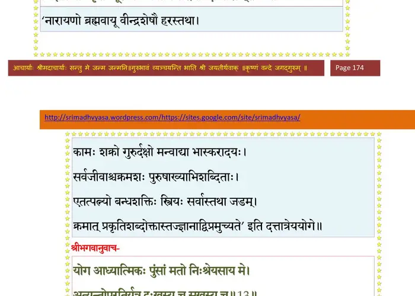
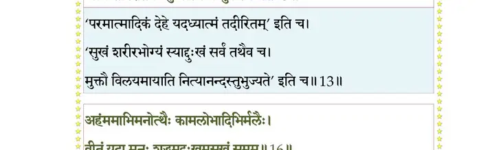
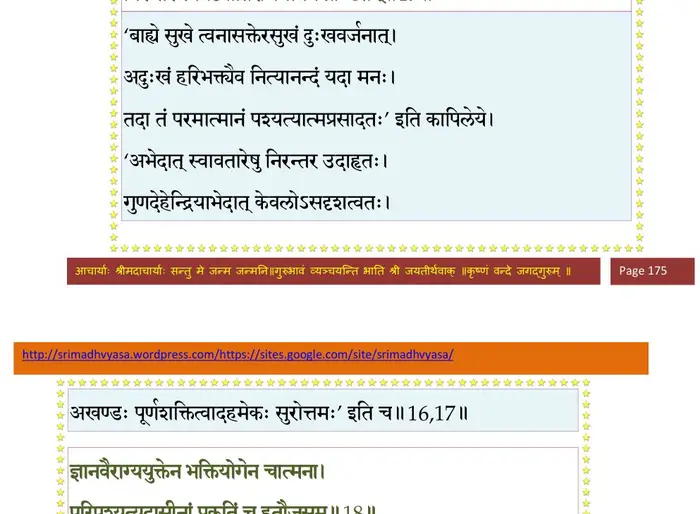
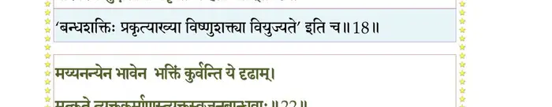
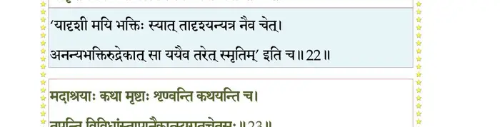
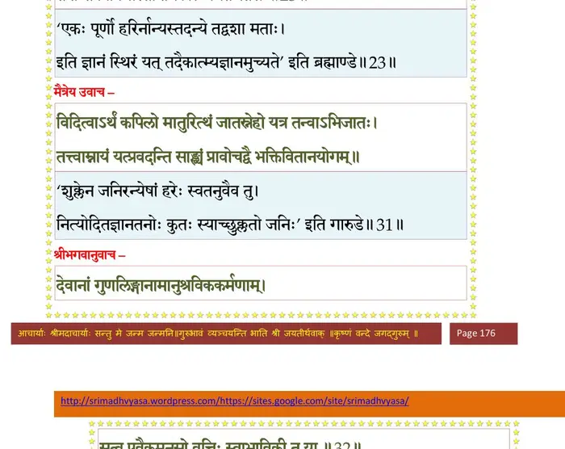
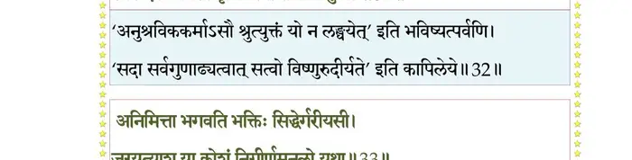
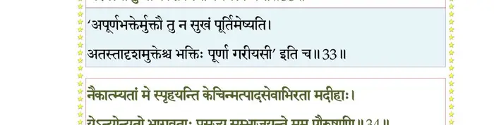
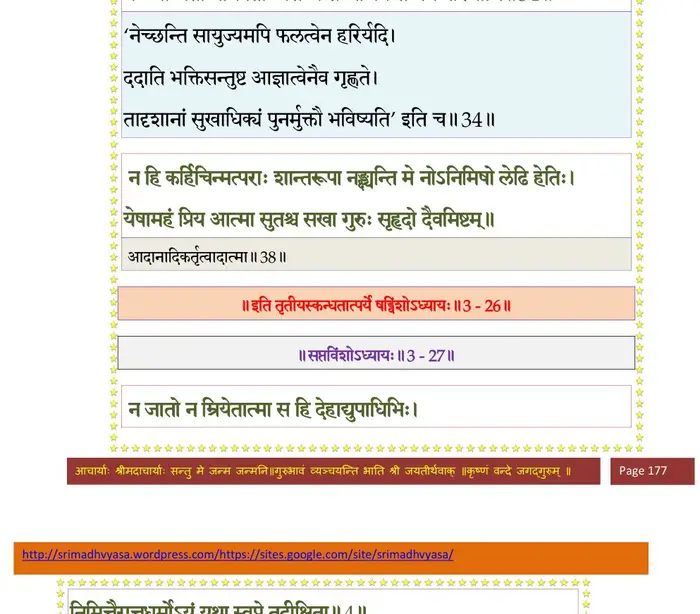
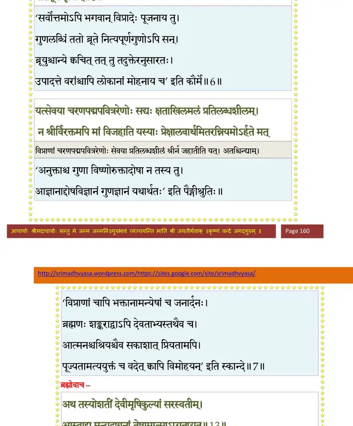

स्कन्ध 3 · अध्याय 26
श्लोक १
राजोवाज–
कपिलस्तत्त्वसंख्याता भगवानात्ममायया ।
जातः स्वयमजः साक्षादात्मप््राज्ञप्तये नृणाम्।। १ ।।
कपिलस्तत्त्वसंख्याता भगवानात्ममायया ।
जातः स्वयमजः साक्षादात्मप््राज्ञप्तये नृणाम्।। १ ।।
श्लोक २
अर्हस्य धर्मिणां पुंसां गरिम्णः सर्वयोगिनाम् ।
विश्रुतौ श्रुतदेवस्य भूरि तृप्यन्ति मेऽसवः।। २ ।।
विश्रुतौ श्रुतदेवस्य भूरि तृप्यन्ति मेऽसवः।। २ ।।
श्लोक ३
यद् यद् विधत्ते भगवान् स्वच्छन्दात्माऽऽत्ममायया ।
तानि मे श्रद्धधानस्य कीर्तन्यान्यनुकीर्तय।। ३ ।।
तानि मे श्रद्धधानस्य कीर्तन्यान्यनुकीर्तय।। ३ ।।
श्लोक ४
शुक उवाच–
द्वैपायनसखश्चैवं मैत्रेयो भगवांस्तथा ।
प््र•हैनं विदुरं प््राीत आन्वीक्षिक्यां प््राचोदितः।। ४ ।।
द्वैपायनसखश्चैवं मैत्रेयो भगवांस्तथा ।
प््र•हैनं विदुरं प््राीत आन्वीक्षिक्यां प््राचोदितः।। ४ ।।
श्लोक ५
पितरि प््रास्थितेऽरण्यं मातुः प््रिायचिकीर्षया ।
तस्मिन् बिन्दुसरेऽवात्सीद् भगवान् कपिलः किल।। ५ ।।
तस्मिन् बिन्दुसरेऽवात्सीद् भगवान् कपिलः किल।। ५ ।।
श्लोक ६
तमासीनमकर्माणं तत्त्वमार्गाग्रदर्शनम् ।
स्वसुतं देवहूत्याह धातुः संस्मरती वचः।। ६ ।।
स्वसुतं देवहूत्याह धातुः संस्मरती वचः।। ६ ।।
श्लोक ७
देवहूतिरुवाच–
निर्विण्णाऽतितरां भूमन्नसदिन्द्रियतर्पणात् ।
येन संभाव्यमानेन प््रापन्नाऽन्धतमः प््राभो।। ७ ।।
निर्विण्णाऽतितरां भूमन्नसदिन्द्रियतर्पणात् ।
येन संभाव्यमानेन प््रापन्नाऽन्धतमः प््राभो।। ७ ।।
श्लोक ८
तस्य त्वं तमसोऽन्धस्य दुष्पारस्याद्य पारगः ।
सच्चक्षुर्जन्मनामन्ते लब्धं मे त्वदनुग्रहात्।। ८ ।।
सच्चक्षुर्जन्मनामन्ते लब्धं मे त्वदनुग्रहात्।। ८ ।।
श्लोक ९
य आद्यो भगवान् पुंसामीश्वरो वै भवान् किल ।
लोकस्य तमसाऽन्धस्य चक्षुः सूर्य इवोदितः।। ९ ।।
लोकस्य तमसाऽन्धस्य चक्षुः सूर्य इवोदितः।। ९ ।।
श्लोक १०
अथ मे देव संमोहमपाक्रष्टुं त्वमर्हसि ।
योऽवग्रहोऽहं ममेतीत्येतस्मिन् योजितस्त्वया।। १० ।।
योऽवग्रहोऽहं ममेतीत्येतस्मिन् योजितस्त्वया।। १० ।।
श्लोक ११
तं त्वा गताऽहं शरणं शरण्यं स्वभृत्यसंसारतरोः कुठारम् ।
जिज्ञासया प््राकृतेः पूरुषस्य नमामि सद्धर्मविदां वरिष्ठम्।। ११ ।।
जिज्ञासया प््राकृतेः पूरुषस्य नमामि सद्धर्मविदां वरिष्ठम्।। ११ ।।
भागवततात्पर्यनिर्णय

श्लोक १३
मैत्रेय उवाच–
इति स्वमातुर्निरवद्यमीप्सितं निशम्य पुंसामपवर्गचोदनम् ।
धियाऽभिनन्द्यात्मवतां सतां गतिर्बभाष ईषत् स्मितशोभिताननः।।
भगवानुवाच–
योग आध्यात्मिकः पुंसां मतो निःश्रेयसाय मे ।
अत्यन्तोपरतिर्यत्र दुःखस्य च सुखस्य वै।। १३ ।।
इति स्वमातुर्निरवद्यमीप्सितं निशम्य पुंसामपवर्गचोदनम् ।
धियाऽभिनन्द्यात्मवतां सतां गतिर्बभाष ईषत् स्मितशोभिताननः।।
भगवानुवाच–
योग आध्यात्मिकः पुंसां मतो निःश्रेयसाय मे ।
अत्यन्तोपरतिर्यत्र दुःखस्य च सुखस्य वै।। १३ ।।
भागवततात्पर्यनिर्णय

श्लोक १४
तमिमं ते प््रावक्ष्यामि यमवोचं पुराऽनघे ।
ऋषीणां श्रोतुकामानां योगमुर्वङ्गनैपुणम्।। १४ ।।
ऋषीणां श्रोतुकामानां योगमुर्वङ्गनैपुणम्।। १४ ।।
श्लोक १५
चेतः खल्वस्य बन्धाय मुक्तये चात्मनो मतम् ।
गुणेषु सक्तं बन्धाय रतं वा पुंसि मुक्तये।। १५ ।।
गुणेषु सक्तं बन्धाय रतं वा पुंसि मुक्तये।। १५ ।।
श्लोक १६
अहंममाभिमानोत्थैः कामलोभादिभिर्मलैः ।
वीतं यदाऽऽत्मनः शुद्धमदुःखमसुखं समम्।। १६ ।।
वीतं यदाऽऽत्मनः शुद्धमदुःखमसुखं समम्।। १६ ।।
भागवततात्पर्यनिर्णय
श्लोक १७
तदा पुरुष आत्मानं केवलं प््राकृतेः परम् ।
निरन्तरं स्वयंज्योतिरणिमानमखण्डितम्।। १७ ।।
निरन्तरं स्वयंज्योतिरणिमानमखण्डितम्।। १७ ।।
भागवततात्पर्यनिर्णय

श्लोक १८
ज्ञानवैराग्ययुक्तेन भक्तियोगेन चात्मना ।
परिपश्यत्युदासीनां प््राकृतिं च हतौजसम्।। १८ ।।
परिपश्यत्युदासीनां प््राकृतिं च हतौजसम्।। १८ ।।
भागवततात्पर्यनिर्णय

श्लोक १९
न युज्यमानया भक्त्या भगवत्यखिलात्मनि ।
सदृशोऽस्ति शिवः पन्था योगिनां ब्रह्मसिद्धये।। १९ ।।
सदृशोऽस्ति शिवः पन्था योगिनां ब्रह्मसिद्धये।। १९ ।।
श्लोक २०
प््रासङ्गमजरं पाशमात्मनः कवयो विदुः ।
स एव साधुषु कृतो मोक्षद्वारमपावृतम्।। २० ।।
स एव साधुषु कृतो मोक्षद्वारमपावृतम्।। २० ।।
श्लोक २१
तितिक्षवः कारुणिका सुहृदः सर्वदेहिनाम् ।
अजातशत्रवः शान्ताः साधवः साधुभूषणाः।। २१ ।।
अजातशत्रवः शान्ताः साधवः साधुभूषणाः।। २१ ।।
श्लोक २२
मय्यनन्येन भावेन भक्तिं कुर्वन्ति ये दृढाम् ।
मत्कृते त्यक्तकर्माणस्त्यक्तस्वजनबान्धवाः।। २२ ।।
मत्कृते त्यक्तकर्माणस्त्यक्तस्वजनबान्धवाः।। २२ ।।
भागवततात्पर्यनिर्णय

श्लोक २३
मदाश्रयाः कथा मृष्टाः शृण्वन्ति कथयन्ति च ।
तपन्ति विविधांस्तापानैकात्म्यगतचेतसः।। २३ ।।
तपन्ति विविधांस्तापानैकात्म्यगतचेतसः।। २३ ।।
भागवततात्पर्यनिर्णय

श्लोक २४
त एते साधवः साध्वि सर्वसङ्गविवर्जिताः ।
सङ्गस्तेष्वथ ते प््र•र्थ्यः सङ्गदोषहरा हि ते।। २४ ।।
सङ्गस्तेष्वथ ते प््र•र्थ्यः सङ्गदोषहरा हि ते।। २४ ।।
श्लोक २५
सतां प््रासङ्गान्मम वीर्यसम्पदो भवन्ति हृत्कर्णरसायनाः कथाः ।
तज्जोषणादाश्वपवर्गवर्त्मनि श्रद्धावती भक्तिरनुक्रमिष्यति।। २५ ।।
तज्जोषणादाश्वपवर्गवर्त्मनि श्रद्धावती भक्तिरनुक्रमिष्यति।। २५ ।।
श्लोक २६
भक्त्या पुमान् जातविराग ऐन्द्रियाद् दृष्टश्रुतात्मद्रविणानुचिन्तया ।
चित्तस्य यत्तो ग्रहणे योगयुक्तो यतिष्यते ऋजुभिर्योगमार्गैः।। २६ ।।
चित्तस्य यत्तो ग्रहणे योगयुक्तो यतिष्यते ऋजुभिर्योगमार्गैः।। २६ ।।
श्लोक २७
असेवयाऽयं प््राकृतेर्गुणानां ज्ञानेन वैराग्यविजृम्भितेन ।
योगेन मय्यर्पितया च भक्त्या मां प््रात्यगात्मानमिहावरुन्धे।। २७ ।।
योगेन मय्यर्पितया च भक्त्या मां प््रात्यगात्मानमिहावरुन्धे।। २७ ।।
श्लोक २८
देवहूतिरुवाच–
का चित् त्वय्यर्पिता भक्तिः कीदृशी मम गोचरा ।
यया पदं ते निर्वाणमञ्जसा प््र•प्नुयामहम्।। २८ ।।
का चित् त्वय्यर्पिता भक्तिः कीदृशी मम गोचरा ।
यया पदं ते निर्वाणमञ्जसा प््र•प्नुयामहम्।। २८ ।।
श्लोक २९
यो योगो भगवत्प््र•प्तौ निर्वाणात्मंस्त्वयोदितः ।
कीदृशः कति चाङ्गानि यतस्तत्त्वावबोधनम्।। २९ ।।
कीदृशः कति चाङ्गानि यतस्तत्त्वावबोधनम्।। २९ ।।
श्लोक ३०
तदेतन्मे विजानीहि यथाऽहं मन्दधीर्हरे ।
सुखं बुद्ध्येय दुर्बोधं योषा भवदनुग्रहात्।। ३० ।।
सुखं बुद्ध्येय दुर्बोधं योषा भवदनुग्रहात्।। ३० ।।
श्लोक ३२
मैत्रेय उवाच–
विदित्वाऽर्थं कपिलो मातुरित्थं जातस्नेहो यत्र तन्वाऽभिजातः ।
तत्त्वाम्नायं यत् प््रावदन्ति साङ्ख्यं प््र•वोचद् वै भक्तिवितानयोगम् ।।
भगवानुवाच–
देवानां गुणलिङ्गानामानुश्राविककर्मणाम् ।
सत्त्व एवैकमनसो वृत्तिः स्वाभाविकी तु या।। ३२ ।।
विदित्वाऽर्थं कपिलो मातुरित्थं जातस्नेहो यत्र तन्वाऽभिजातः ।
तत्त्वाम्नायं यत् प््रावदन्ति साङ्ख्यं प््र•वोचद् वै भक्तिवितानयोगम् ।।
भगवानुवाच–
देवानां गुणलिङ्गानामानुश्राविककर्मणाम् ।
सत्त्व एवैकमनसो वृत्तिः स्वाभाविकी तु या।। ३२ ।।
भागवततात्पर्यनिर्णय

श्लोक ३३
अनिमित्ता भगवति भक्तिः सिद्धेर्गरीयसी ।
जरयत्याशु या कोशं निगीर्णमनलो यथा।। ३३ ।।
जरयत्याशु या कोशं निगीर्णमनलो यथा।। ३३ ।।
भागवततात्पर्यनिर्णय

श्लोक ३४
नैकात्म्यतां मे स्पृहयन्ति केचिन्मत्पादसेवाभिरता मदीहाः ।
येऽन्योन्यतो भागवताः प््रासज्य सम्भाजयन्ते मम पौरुषाणि।।३४।।
येऽन्योन्यतो भागवताः प््रासज्य सम्भाजयन्ते मम पौरुषाणि।।३४।।
भागवततात्पर्यनिर्णय

श्लोक ३६
पश्यन्ति मे ते रुचिराण्येव सन्तः प््रासन्नवक्त्रारुणलोचनानि ।
रूपाणि दैत्यासुविनाशनानि साकं वाचं स्पृहणीयां वदन्ति।। ३५
तैर्दर्शनीयावयवैरुदारविलासहासेक्षितवामसूक्तैः ।
हृतात्मनो हृतप््र•णस्य भक्तिमन्विच्छतो गतिमण्वीं प््रायुञ्जे।। ३६ ।।
रूपाणि दैत्यासुविनाशनानि साकं वाचं स्पृहणीयां वदन्ति।। ३५
तैर्दर्शनीयावयवैरुदारविलासहासेक्षितवामसूक्तैः ।
हृतात्मनो हृतप््र•णस्य भक्तिमन्विच्छतो गतिमण्वीं प््रायुञ्जे।। ३६ ।।
श्लोक ३७
अथो विभूतिं मम मायया चिता मैश्वर्यमष्टाङ्गमनुप््रावृत्तम् ।
श्रियं न देवीं स्पृहयन्ति भद्रां परस्य मे तेऽश्नुवते हि लोके।।३७।।
श्रियं न देवीं स्पृहयन्ति भद्रां परस्य मे तेऽश्नुवते हि लोके।।३७।।
भागवततात्पर्यनिर्णय

श्लोक ३८
न कर्हिचिन्मत्पराः शान्तरूपा नङ्क्षयन्ति मे नोऽनिमिषो लेढि हेतिः ।
येषामहं प््रिाय आत्मा सुतश्च सखा गुरुः सुहृदो दैवमिष्टम्।। ३८ ।।
येषामहं प््रिाय आत्मा सुतश्च सखा गुरुः सुहृदो दैवमिष्टम्।। ३८ ।।
श्लोक ३९
इमं लोकं तथैवामुमात्मानमुभयायिनम् ।
आत्मानमनु ये चेमे ये रायः पशवो गृहाः।। ३९ ।।
आत्मानमनु ये चेमे ये रायः पशवो गृहाः।। ३९ ।।
श्लोक ४०
विसृज्य सर्वानन्यांश्च मामेवं विश्वतोमुखम् ।
भजन्त्यनन्यया भक्त्या तान् मृत्योरतिपारये।। ४० ।।
भजन्त्यनन्यया भक्त्या तान् मृत्योरतिपारये।। ४० ।।
श्लोक ४१
नान्यत्र मद् भगवतः प््राधानपुरुषेश्वरात् ।
आत्मनः सर्वभूतानां भयं तीव्रं निवर्तते।। ४१ ।।
आत्मनः सर्वभूतानां भयं तीव्रं निवर्तते।। ४१ ।।
श्लोक ४२
मद्भयाद् वाति वातोऽयं सूर्यस्तपति मद्भयात् ।
वर्षतीन्द्रो दहत्यग्निर्मृत्युश्चरति मद्भयात्।। ४२ ।।
वर्षतीन्द्रो दहत्यग्निर्मृत्युश्चरति मद्भयात्।। ४२ ।।
श्लोक ४३
ज्ञानवैराग्ययुक्तेन भक्तियोगेन योगिनः ।
क्षेमाय पादमूलं मे प््राविशन्त्यकुतोभयम्।। ४३ ।।
क्षेमाय पादमूलं मे प््राविशन्त्यकुतोभयम्।। ४३ ।।
श्लोक ४४
एतावानेव लोकेऽस्मिन् पुंसां निःश्रेयसोदयः ।
तीव्रेण भक्तियोगेन मनो मय्यर्पितं स्थितम्।। ४४ ।।
तीव्रेण भक्तियोगेन मनो मय्यर्पितं स्थितम्।। ४४ ।।
।। इति श्रीमद्भागवते तृतीयस्कन्धे षड्विंशोऽध्यायः ।।